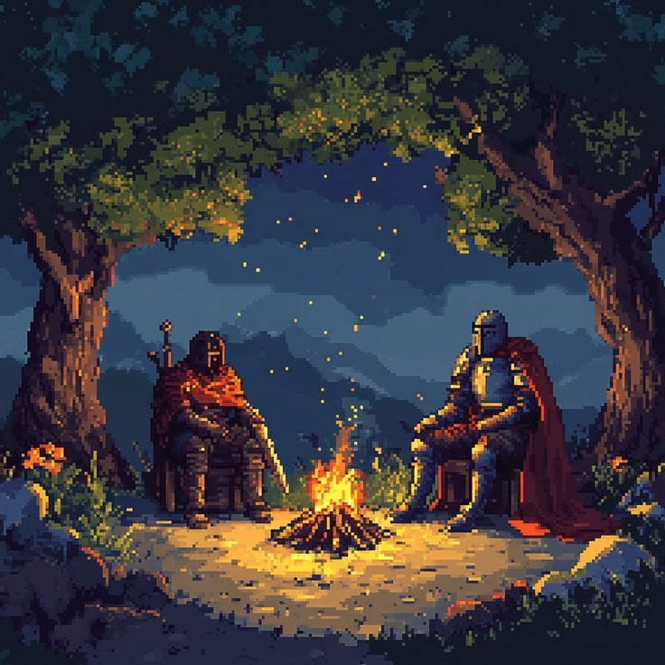
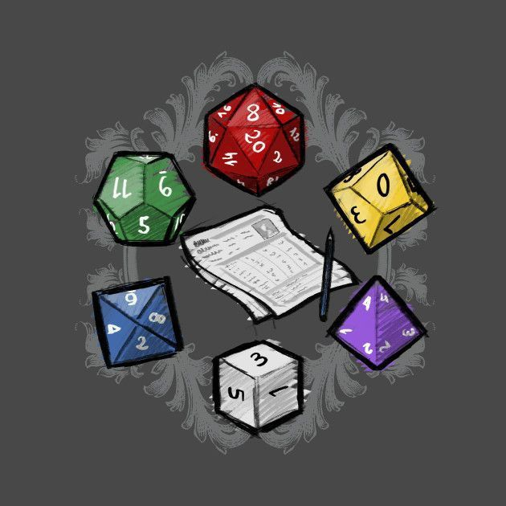
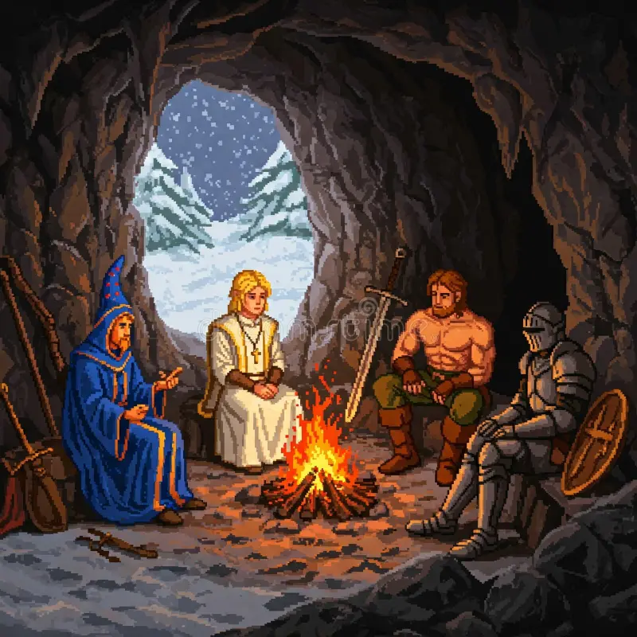

Plataforma de Suporte para Jogos de RPG
Um sistema web projetado para a criação de personagens e gerenciar rolagens de dados diretamente pelo navegador, eliminando a necessidade de fichas de papel e cálculos manuais.
Como as ferramentas funcionam:
1. Criar Fichas de Personagem
O usuário insere os atributos do seu personagem e gera a sua ficha de dados, salvando o progresso. O personagem criado ficará armazenado e disponível para consulta posterior na aba "Minhas Fichas".
2. Rolador de Dados Virtual integrado
Disponibiliza os dados padrão (d4, d6, d8, d10, d12, d20, d100). É possível selecionar a quantidade de dados e rolar junto com diferentes tipos de dados.
3. Histórico e Armazenamento de Fichas
A página mantém um registro visual de todas as fichas criadas com os resultados detalhados e permite salvar as fichas criadas para consultas ou edições posteriores, na aba "Minhas Fichas".
A Plataforma Ideal para o seu Sistema Próprio
Liberdade além das regras comerciais
Quem cria e joga sistemas próprios de RPG sabe como é difícil encontrar uma ferramenta digital compatível. Nossa plataforma oferece uma ficha modular e adaptável, projetada especificamente para campanhas originais de fantasia sombria.
Estrutura focada em Sobrevivência
Em vez de preencher dezenas de perícias engessadas, nosso sistema foca em uma estrutura limpa e direta de atributos essenciais como Vitality, Strength e Dexterity, além do controle nativo de Humanidade.


Rolagem de Dados Sem Sair da Página
Esqueça os dados presenciais
Esqueceu seus dados físicos ou não quer carregar peso para a sessão? Nosso rolador integrado substitui completamente os dados de mesa presenciais, garantindo rolagens honestas e rápidas diretamente pelo seu navegador.
Tudo centralizado em um só lugar
Não há necessidade de abrir outros sites, instalar aplicativos extras ou usar bots em paralelo. Você pode gerenciar sua ficha e fazer todos os seus testes de d4 a d100 na nossa própria plataforma, mantendo o foco total na história do jogo.

Sobre nós
O Projeto
Este site foi desenvolvido com a finalidade de fornecer uma ferramenta ágil e de uso intuitivo para praticantes de RPG de mesa. A plataforma busca centralizar os recursos mais demandados em uma partida, eliminando a lentidão causada pelo preenchimento de documentos físicos e permitindo que a interação entre jogadores ocorra de maneira mais fluida.
Desenvolvedore do Site
- Daniel Martins Belculfine
- Lucas Ricci Arruda Leite
- Carlos Alberto dos Santos
- Thiago Sampaio Ferreira